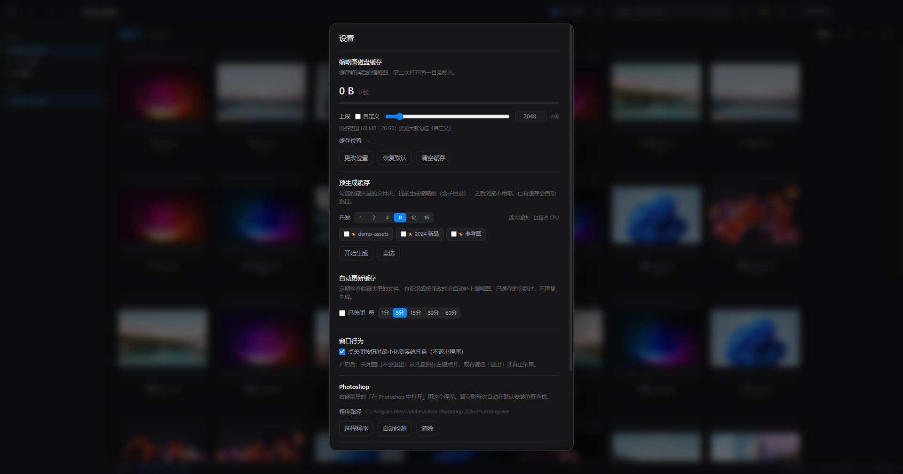

它们各自缺一块，这个工具补的正是那一块。
PSD、AI、RAW 只有图标。这里直接解码合成图或内嵌缩略图，一眼分得清是哪张。
要先建库、导入、等索引，动辄几百兆内存。这里零导入，打开文件夹就开始浏览。
不写入、不改名、不移动。删掉这个软件，你的素材目录跟没装过一样。
都是为「快速找到那张图」服务的。
只渲染可见区域。1.2 万个文件连续快速滚动稳定 60fps，缩略图边滚边出。
优先读内嵌缩略图（3ms）；没有就解合成图，支持 RLE / raw、RGB / CMYK / 灰度（30–70ms）。
内存 LRU + SQLite（WAL）。第二次打开同一目录基本瞬间出图，命中约 3ms。
勾选收藏夹，1–16 并发提前生成缩略图。可暂停/继续/停止，实时显示速率和剩余时间。
后缀筛选带数量统计、文件名/文件夹名搜索、修改时间区间、自定义隐藏后缀。
右键在 Photoshop 中打开、在资源管理器定位；拖文件夹或快捷方式进窗口即可加入侧栏。
测试环境：Ryzen 7 3700X（8 核 16 线程）、24 GB、SATA SSD、12574 个文件的真实素材库。
对比：同功能的 Electron 版本 188 MB / 内存约 150 MB。Rust 后端 + 系统 WebView 的差距。
需要 Windows 10/11、Node 20+、Rust stable（MSVC 工具链）、WebView2 运行时。
:: 1. 装依赖 npm install :: 2. 开发模式 npm run tauri dev :: 3. 出包 npm run tauri build
产物：src-tauri/target/release/asset-browser.exe 与 bundle/nsis/*.exe

缓存目录、上限、预生成并发、托盘、Photoshop 路径、隐藏后缀，都在设置里。
仓库里带了一份写给 AI 助手的 AGENTS.md，把人话需求变成代码这件事不该靠运气。
PIPELINE_VER、淘汰不能每次全表 SUM……都是踩过的坑。把仓库丢给 Claude Code / Cursor / Codex，让它先读 AGENTS.md，再提需求。
# 典型用法 你：帮我在右键菜单里加一个「复制文件名」 助手：读 AGENTS.md → App.tsx 的 menuItems 数组加一项 → 复用 copyPath，改成只复制 name → npx tsc --noEmit 验证 → npm run tauri build 重新嵌入
托盘、快捷方式解析、系统代码页转换都用了 Win32 API。
.ai / .indd / .c4d / .max 没有可用解码器，显示灰色徽标。
保存时隐藏了所有图层，合成图本身就空白，任何软件都提不出来。